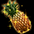

復帰者クエでもらえるアイテム一覧
基本システムクエストチャート
報酬一覧
雑学
基本システム
魔神召喚の壺とはモンスターを召喚できるアイテムです。使用することでモンスターが召喚され、一定時間以内に召喚されたモンスターを討伐すると褒賞を獲得できます。
壺には不思議な紺碧の壺(一般壺)と奇妙な紫苑の壺(上級壺)の2種類があります。
壺の入手方法
壺は一部の秘密ダンジョン、ギルドダンジョン、パーティボスモンスターの討伐により、一定確率で獲得できます。各条件下において、上級壺は普通の壺と比較して1/1000程度のドロップ率で入手できます。
入手時、一定確率でインベントリに自動的に入ってきます。(インベントリが空いてない場合、所有権がある状態でフィールドにドロップします。)
この他にも、各種ボックスドロップイベントやキャンペーン、PortTownBox・地図システム(特殊バフ3段階)などからも一定確率で入手可能です。
取引可能な壺であれば、露店から購入・取引することもできます。
※ 2018年頃から壺を銀行に保管・重ね置き(20個まで)できるようになりました。
入手場所の詳細については、壺の入手方法一覧より御覧ください。
壺の使い方
壺は町や村・特殊マップ以外のフィールドで使用できます。
インベントリ内にある壺をダブルクリック、もしくは右クリックから「使う」コマンドを選択します。
使用後、3秒のカウントダウン後にモンスターがランダムで登場します。
一般壺の場合は召喚者のレベルとに最も近い200～999Lvのモンスターが出現します。
上級壺の場合は999Lv固定です。

モンスターを制限時間以内に討伐します。(一般壺：60秒・上級壺：150秒/600秒)
※ 同じ場所に何体も同時に召喚すると、稀にモンスターが出現しない不具合が発生します。(2018現在)
制限時間内に討伐すると、褒賞を獲得できます。
| 一般壺 褒賞 |
||
|---|---|---|
| 経験値 |
(26200 + 6500 * mobLv) * (各種補正) ※ボス3(Zin)モンスターの約4.5倍の基礎経験値 |
|
| 紺碧の宝石箱 |
ランダムで経験値増加に関係するベリー系アイテムを1つ入手 紺碧の宝石箱から入手可能なアイテム 土日は20%の確率で2個入手 |
|
| 上級壺 褒賞 |
||
| 経験値 |
(1) * (各種補正) ※攻撃命中時に確定で入手 |
|
| 紺碧の宝石箱(1段階) |
ランダムで経験値増加に関係するベリー系アイテムを1つ入手 紺碧の宝石箱から入手可能なアイテム 土日は20%の確率で2個入手 |
|
| 紫苑の宝石箱(2段階) |
ランダムで錬成などに関係するアイテムを1つ入手 紫苑の宝石箱から入手可能なアイテム ※ 攻撃参加者のいるPTの中から最大100人程度までのインベに入る 土日は20%の確率で2個入手 |
|
制限時間内にモンスターを討伐できなかった場合、モンスターは消滅します。
不思議な紺碧の壺
- 制限時間60秒
- 壺使用者と同レベルmob(最小200、最大999)が出現
- モンスターは非アクティブZinモンスター(セミ1～ボス3)
- モンスターの種類に依らず、獲得経験値は同じ
- 報酬は壺使用者のPTメンバーで共有されます。
- 転生者は、パーティー内にLv差が100以上のメンバーがいると討伐時の基礎経験値が1になります。
- 参考として、900Lv召喚されたモンスターの一例(参考：四つ葉日記)

モンスターの攻撃スキル注意点
以下の2体はアンテイム(味方ペットを敵化する)を使ってくる可能性があります。タゲ取り時に注意。


マモンは召喚時に強制終了が発生しやすいです。(2018現在)
壺PT時などで強制終了が発生してもいいように対策を。

レイジストやマモンなどは火抵抗が高く、メテオをはじめとする魔法攻撃だけでは討伐するのに手こずるモンスターがいます。
(属性弱化/魔法弱化を相当数積むことで対応可能)

紺碧の宝石箱から入手可能なアイテム
※2018年10月10日アップデートより、宝石箱の出現アイテムがリニューアルされました。
- 紺碧の宝石箱は100個までスタック可能。(旧5個)
- 宝石箱は銀行取引のみ可能ですが、使用時に出てきたアイテムは全て銀行取引も不可。
- 各アイテムにおいて、有効期限なしです。
- 出現するベリー系アイテムのスタック数は育成剤が10個、他は20個(旧5個)に変更されました。
| 紺碧の宝石箱 出現アイテム | ||
|---|---|---|
| アイテム | 持続時間 | |
| ソラの育成剤[ゴールド] |
取引不可アイテム 植木鉢の成長率を 51％～99% に変更 |
|
| 紺碧のサンベリー |
取引不可アイテム 狩りでの獲得経験値 20分間 110％ 増加 |
|
| 新鮮な紺碧のサンベリー |
取引不可アイテム 狩りでの獲得経験値 20分間 140％ 増加 |
|
| サンチェリー |
取引不可アイテム 狩りでの獲得経験値 60分間 140％ 増加 ※他ベリーの効果を上書き |
|
|  | 新鮮なパインベリー |
取引不可アイテム 狩りでの獲得経験値 60分間 150％ 増加 ※他ベリーに効果を上乗せ(重複)可能 -> [EXP 290%]という倍率用に使えます。 |
出現モンスター一覧
[こちら]にてまとめました。奇妙な紫苑の壺
紫苑の宝石箱から入手可能なアイテム
※2018年10月10日アップデートより、宝石箱の出現アイテムがリニューアルされました。
- 紺碧の宝石箱は100個までスタック可能。(旧5個)
- 宝石箱は銀行取引のみ可能ですが、使用時に出てきたアイテムは全て銀行取引も不可。
- 各アイテムにおいて、有効期限なしです。
| 復帰者クエスト 獲得アイテム | ||
|---|---|---|
| アイテム | 説明 | |
|
コスチューム10日版 表裏職1つずつ |
レアコスチューム | |
|
断熱石 30個 |
炎の石を製作するための材料の一つ。発火石と合わせて使うことで、黒き炎の力を引き出せる。 ※ レベル差が少ないモンスターを倒した時に、モンスターが落とすことがあります |
|
| 黒き炎の欠片 20個 |
神秘的な力を持った黒い炎の小さな欠片。 ほんのひと滴ほどの大きさだが、その中に秘められている力は膨大で、装備の錬成材料に最適。 ※ 1日クエストで入手可能 |
|
|
神秘の石 1個 or 5個 |
古代都市タティリスの力が封じ込められている神秘的な石で、強烈なエネルギーを発している。 ギルドホールにいる考古学者グラン、古美術商ネネに渡すと様々なアイテムと交換してくれる。 ※ 古代都市タティリスの遺跡で入手できる他、ユニーク以上のアイテム分解でも入手可能 |
|
|
結晶石 1個 or 3個 |
タティリス秘伝の破壊の力で、ユニークアイテムを分解した時に、稀に取り出すことができる美しい石で、 古代タティリス人は‘魂が宿る石’という意味で‘ソウルストーン’とも呼んでいたらしい。 ※ ユニークアイテムを分解することで入手可能 |
|
| 炎の石 | 断熱石を加工して作った小さな型の中に、発火石と黒き炎の欠片を1：1の割合で混ぜ合わせて作った炎の石。 強力な火力を持つため小さな石しか作ることができず、何かに使用する場合には、さらに加工が必要だが、 現状でも非常に高価。 ※ 錬成材料の購入に使用できます。 ※ ランディスが、炎の石に大変興味を持っているとの噂がある・・・ |
|
| 再錬成剤 | 錬成されたアイテムに使用すると、解放された神秘的な能力を封印し、 元のアイテムに戻す再錬成を行う特殊な薬品。称号は変動しない |
|
| 黄金のチケット | 黄金の泉より出現するといわれる金色に輝くチケット。本物の黄金かは分からないが、 古都ブルンネンシュティグの鑑定士ティレンと武器職人サナがこのチケットを集めているという噂がある。 |
|
| 揮発性の炎の錬成剤 | 神秘に満ちた黒き炎の欠片を浸して作った浄水。これを使って装備を強化することができる。 密封されていないため取引不可。 ※ 錬成剤のみで錬成する場合、称号は引き継がれませんが、 特殊な補助剤を購入して錬成剤と一緒に使用すれば称号を引き継げます。 ※ 取引不可アイテム |
|
出現モンスター一覧
[1段階目]

[2段階目]


壺の入手方法一覧
| 壺を入手可能な秘密ダンジョン | |
|---|---|
| 秘密ダンジョン | 制限Lv |
| 河口ダンジョンの隠された宝物部屋 | 160～200 |
| ソルティケーブの混沌の空間 | 190～230 |
| 呪いの墓に建つ呪われし塔 | 195～235 |
| 過ぎし栄光の展示場にある遺物保管所 | 250～290 |
| キングクラブの巣 | 260～300 |
| ハイランド洞窟の堕落した部族 | 290～310 |
| ダークソウルの封印場所 | 290～330 |
| レッドアイの隠されたアジト | 320～345 |
| レッドアイ特殊エージェントのアジト | 340～360 |
| フォーリン望楼の隠された地下監獄 | 355～405 |
| カダーム・ギガスの寺院 | 405～435 |
| ダークエルフ王宮の隠された倉庫 | 440～490 |
| スパインホールのミステリーゾーン | 450～500 |
| 呪いを受けたミズナ洞窟の隠された洞窟 | 500～550 |
| 名も無き遺跡のデーモンキングのねぐら | 535～585 |
| ヘソパルの洞窟 | 550～600 |
| モリネルタワーの隠された研究所 | 580～620 |
| ビックマウスダンジョンのラットキング区域 | 600～640 |
| 閉鎖された時空研究所 | 651～680 |
| ヴァンパイア・キングダム | 681～710 |
| 壺を入手可能なギルドダンジョン | |||
|---|---|---|---|
| ギルドダンジョン | 適正Lv | ホールランク | 入場条件 |
| 古代都市タティリス遺跡 入口 | 1～100 | 1以上 | - |
| 古代都市タティリス遺跡 B1 | 101～200 | 1以上 | 入場券 (タティリス遺跡のかけら20個) |
| 古代都市タティリス遺跡 B2 | 201～300 | 2以上 | 入場券 (タティリス遺跡のかけら40個) |
| 古代都市タティリス遺跡 B3 | 301～400 | 2以上 | 入場券 (タティリス遺跡のかけら60個) |
| 古代都市タティリス遺跡 B4 | 401～500 | 3以上 | 入場券 (タティリス遺跡のかけら80個) |
| 古代都市タティリス遺跡 B5 | 501～600 | 3以上 | 入場券 (修復済みのタティリス遺跡の出土品1個) |
| 古代都市タティリス遺跡 B6 | 601～700 | 4以上 | 入場券 (修復済みのタティリス遺跡の出土品2個) |
| 古代都市タティリス遺跡 B7 | 701～800 | 4以上 | 入場券 (修復済みのタティリス遺跡の出土品2個) |
| 古代都市タティリス遺跡 B8 | 801～900 | 5以上 | 入場券 (修復済みのタティリス遺跡の出土品5個) |
| 古代都市タティリス遺跡 B9 | - | - | コスミックストーン (土日のみ) ※ |
※B9はギルドホールランク5の場合、リーダーのみコスミックストーンが必要です。
他のパーティーメンバーはコスミックストーンを所持していなくても入場可能。
ギルドホールランク4以下の場合は、パーティーメンバー全員がコスミックストーンを所持している必要があります。
壺を入手可能なPTボス
壺を入手可能なPTボスは、現在全てのPTボスモンスターが対象です。
雑学
ベリー系アイテムの効果説明文。[参考] 公式サイト